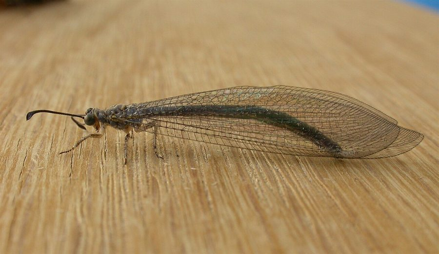

एंटलायनAntlion
Myrmeleon · Myrmeleontidae · INS-0112

- Scientific nameवैज्ञानिक नाम
- Myrmeleon Linnaeus, 1758
- Familyकुल
- Myrmeleontidae
- Hindiहिंदी
- एंटलायन
- Local namesस्थानीय नाम
- antlion, ant lion, entlion
- Status hereयहाँ की स्थिति
- native
- Movementआवागमन
- Resident, here all year
- IUCNIUCN
- not evaluated
- Reviewसमीक्षा
- audited and independently read
When to look कब देखें
Present all year.साल भर मौजूद।
Uses and possibilities उपयोग और संभावनाएँ
Drawn from the documented uses in the profile below, where each is labelled traditional, current or a research lead. All uses →
एंटलायन / Antlion
Myrmeleon Linnaeus, 1758 — Myrmeleontidae
एंटलायन — सूखी बालू और धूल की जगहों में एक विलक्षण शिकारी का लार्वा रहता है। जो छोटे कीड़े उसके कीप-आकार के गड्ढे में गिरते हैं, उस पर एक छोटा-सा प्रेत जैसा, ढके बालों वाला, विकराल जबड़ों वाला लार्वा झपटता है। बालू के अंदर छिपा, यह बस शिकार का इंतज़ार करता है। बड़ा होकर यह एक सुंदर, पतली पंखों वाली मक्खी बन जाती है जो शाम को एक जैसी घोल-घोल की उड़ान उड़ती है। यह अकेले पैदा नहीं होता; सूखी धूल की जगहें अक्सर सैकड़ों एंटलायन लार्वों से पटी होती हैं।
Quick Identification त्वरित पहचान
Larvae:
| Feature | Description |
|---|---|
| Size | Body length 5–15 mm depending on species and instar |
| Shape | Flattened, broad at the front, tapering behind; appears somewhat grotesque |
| Colour | Brown, tan or pale grey; often dusted with sand |
| Head | Large, flat; massive curved jaws projecting forward, meeting at a point |
| Legs | Short, stout, with claws; not adapted for active running |
| Habitat | Bottom of conical pit in dry sand or dust |
| Behaviour | Motionless, buried except for the jaws; attacks only when prey tumbles into the pit |
Adults:
| Feature | Description |
|---|---|
| Size | Wing span 25–60 mm depending on species |
| Wings | Four equal wings, delicate, with elaborate venation; held tent-like at rest |
| Colour | Brown, tan or pale, sometimes patterned; not brightly coloured |
| Body | Slender, elongate; long antennae with a club-shaped ending |
| Eyes | Large compound eyes |
| Flight | Weak and fluttering, especially in the evening; males often seen in numbers |
Field tip (larvae): Conical pits in dry, sheltered sandy ground, with no vegetation; a single flat object placed at the bottom will attract a sand-throwing larva hidden in the pit bottom. A photograph of the pit is diagnostic.
Field tip (adults): Weak-flying insects with delicate wings, resembling damselflies, visiting lights in the evening or active at dusk in dry areas.
हिंदी — कैसे पहचानें (लार्वा): सूखी बालू में शंकु जैसा गड्ढा, गड्ढे के तल पर छिपा, बड़े जबड़ों वाला एक प्रेत जैसा प्राणी — कोई चींटी या छोटा कीड़ा गिरे तो पल भर में पकड़ लेता है। लार्वा अपने जबड़ों से बालू की बौछार करता है और गड्ढे को गहरा करता है। (वयस्क) पतली पंखों वाली, मक्खी जैसी, दुर्बल उड़ान।
Morphology आकारिकी
Larval biometrics (genus Myrmeleon, Indian species):
| Measurement | Range |
|---|---|
| Body length (final instar) | 10–15 mm |
| Jaws length | 4–6 mm |
| Pit diameter | 10–30 mm |
| Pit depth | 15–40 mm |
Larval structure: Head large and flattened, with very large compound eyes; mandibles (jaws) are the dominant feature, greatly enlarged, curved, and meeting at a sharp point; a broad gap between them allows small prey to be retained. The thorax is broad; the abdomen is narrower and somewhat retracted. Legs are short and not suited for rapid movement. The surface is often dusty, providing camouflage.
Adult structure: Body elongate, with three distinct regions: head (large eyes, clubbed antennae); thorax (small); abdomen (elongate, ten segments). Wings are four in number, roughly equal in size, with elaborate venation characteristic of the order. The colour is typically brown or tan, never brilliant.
Species of the region: The genus Myrmeleon contains some 50 species in Asia, with perhaps 10–15 species recorded from India. Detailed species identification of the region's antlions has not been undertaken, so this profile is at genus level.
हिंदी (लार्वा): सिर चपटा, पूरा आँखों से ढका, जबड़े विशाल, पूरे शरीर का तीसरा हिस्सा। पैर छोटे। बालू की धूल से ढका। (वयस्क) शरीर पतला, सिर बड़ी आँखों वाला, चार पंख बराबर, नाज़ुक रग-रेखाओं वाले।
Behaviour & Ecology व्यवहार और पारिस्थितिकी
Larvae are sit-and-wait ambush predators of the soil surface. The larva constructs a conical pit by spiralling backwards in loose sand or dust, flicking sand upward with its head. It then positions itself at the pit bottom, buried in sand, with only the broad head and sickle-shaped jaws visible, waiting. When an ant or other small arthropod loses its footing on the steep pit wall, gravity carries it down toward the predator. The larva accelerates the fall by flicking sand at the intruder, then strikes with its jaws. Prey is punctured and paralyzed by injection of venom, and the body contents are sucked out. The larva can remain motionless for days, conserving energy while hunting.
Adults emerge from pupae buried in sand. They are weak fliers, most active at dusk or during warm evenings. Males gather in loose swarms, possibly to intercept females. Mating occurs in flight or on vegetation. Females lay eggs in the sand near suitable hunting habitat. The entire larval life may take a year or more, with the larva passing through multiple instars and constructing larger pits as it grows.
हिंदी: लार्वा: सूखी बालू में गड्ढा खोदता है, तल पर बैठता है, कोई चींटी उतरे तो पल में पकड़ लेता है, जहर से सुन्न करके सारा रस पी लेता है। वयस्क: कमज़ोर उड़ान, शाम को सक्रिय, मादा को खोजते रहते हैं। अंडे रेत में देती है।
Life Cycle / Phenology जीवन चक्र
| Stage | Duration |
|---|---|
| Egg | 5–7 days |
| Larval instars (3–4) | 1–2 years depending on feeding, temperature, and species |
| Final instar | may persist 3–6 months before pupation |
| Pupa (in sand cocoon) | 2–4 weeks |
| Adult lifespan | 2–4 weeks |
Generations: One to two per year depending on temperature and food availability.
Host Plants or Prey आहार
Larval prey:
- Ants (major component of diet)
- Termites
- Small flies and fly larvae
- Beetles and beetle larvae
- Small spiders
- Mites
- Springtails
No specific host plant — the larva is a free-living predator of the soil surface.
Predators / Natural Enemies शत्रु
Of larvae:
- Spiders (jumping spiders and hunting spiders invade pits)
- Parasitoid wasps (lay eggs on larvae)
- Ants (in large numbers may overwhelm a pit)
- Ground beetles (may prey on larvae or destroy pits)
Of adults:
- Robber flies (Asilidae)
- Spiders
- Bats (in warm regions)
- Small birds
Agricultural / Human Relevance कृषि प्रासंगिकता
Biological control. Antlion larvae are effective predators of soil-surface insects, including ants and pest insects. In fields with good soil health and minimal disturbance, antlion populations may contribute to pest regulation, though they are not selective.
Indicator species. The presence of active pits indicates stable, undisturbed soil with low pesticide residues. Their absence may signal soil compaction or chemical pollution.
Traditional and Ethnobotanical Use: none recorded for the region. In some Asian traditions the larvae have been kept in boxes as curiosities and for their hunting behaviour.
Today. Not economically important but of interest to naturalists. Habitat loss through soil compaction and agricultural intensification threatens populations.
Research direction (a lead, not a result). The species composition and biomass of antlion communities in eastern UP's cultivated soils and their relationship to soil health have not been documented.
हिंदी: खेत में अगर ऐसे गड्ढे दिखें तो जानो कि मिट्टी ठीक है, कीटनाशक नहीं डाले गए हैं। अगर गड्ढे नहीं हैं तो मिट्टी कुछ गड़बड़ है।
Expected Locally स्थानीय रूप से अपेक्षित
Not a field record. Written from published accounts for eastern Uttar Pradesh. No confirmed local sighting yet — if you have seen it, that is what the atlas needs.
अभी तक स्थानीय पुष्टि नहीं। यह विवरण प्रकाशित स्रोतों से है, किसी अवलोकन से नहीं।
Expected in any dry, sandy, undisturbed ground across the district: fallow fields, space under sheltering rocks, dry banks, dust-swept pathways. Most easily found by looking for conical pits in loose soil. Adults are weak fliers and rarely noticed. A photograph of a pit, or a specimen of a larva, is a confirmed record.
Distribution वितरण
Global range: Worldwide in tropical to temperate regions; present on every continent except Antarctica.
In India: Widespread in dry habitats; common throughout the plains.
In Uttar Pradesh: Present in suitable habitats throughout.
In Basti district / eastern UP: Expected in any undisturbed sandy ground.
Research Questions शोध प्रश्न
- How many antlion pits are in a square metre of different soil types and land uses? / एक वर्ग मीटर में कितने गड्ढे होते हैं? — Count pits in several habitats.
- What is the size relationship between pit diameter and larva size? — Measure both.
- Which prey items are most common in the diet of local antlions? — Observe captures or dissect larvae.
- How long does development take from egg to adult under local conditions? — Keep in captive sand.
- Are there different species in the district, and can they be identified? — Collect adults and examine.
Similar Species मिलती-जुलती प्रजातियाँ
| Species | How to tell apart | हिंदी |
|---|---|---|
| Owlflies (Ascalaphus) | Similar but slightly larger with more prominent eyes and clubbed antennae; more active fliers; no pit-building larvae | आँखें बड़ी, मज़बूत उड़ान, गड्ढा नहीं खोदते |
| Damselfly or dragonfly | Adults similar in wing pattern but much larger (wingspan 50–100 mm); brightly coloured | बहुत बड़े, रंगीन |
| Antlion pits vs spider burrows | Spider burrows are straight and lack the radial construction visible in antlion pits | मकड़ी की सुरंग सीधी, शंकु नहीं |
Field rule: Conical pits in dry sandy ground without vegetation, with a tiny flat-headed insect with huge jaws visible in the bottom, is an antlion larva.
Taxonomy & Classification वर्गीकरण
Original description. The genus was established by Linnaeus in Systema Naturae, 10th edition (1758). The species of eastern UP have not been formally catalogued; this profile is at genus level.
Subspecies. Not applicable at genus level.
Family and order placement. Myrmeleontidae (antlions), order Neuroptera (lacewings, antlions, scorpionflies). The order is characterized by complete metamorphosis and aquatic or terrestrial larvae specialized as predators. Neuroptera is basal to the Coleoptera within the Endopterygota.
Phylogenetic notes. Antlions are derived myrmeleontids; the pit-trapping behaviour is an advanced strategy that allows small predators to capture much larger prey.
IUCN status rationale. Not evaluated at genus level; no Indian Myrmeleon species has been assessed.
Photo Gallery फोटो गैलरी
Photos needed आवश्यक फोटो
- [ ] Antlion pit in sand with larva visible (गड्ढा)
- [ ] Larva viewed from above showing jaws (ऊपर से)
- [ ] Adult in flight or at rest (वयस्क)
No photos yet — add field photos to media/species/antlion/ and run node scripts/sync_photos.js.
References संदर्भ
- Linnaeus, C. (1758). Systema Naturae, 10th edition. Salvius, Stockholm. [genus]
- Srivastava, R.C. (1993). Insect pests of vegetables: biology, behaviour and management with special emphasis to India. Technical Bulletin No. 2, Centre for Agricultural Biosciences International, Wallingford, UK.
- New, T.R. (1991). Neuroptera. In: The Insects of Australia, vol. 2. CSIRO and Melbourne University Press.
- Oswald, J.D. (2016). Antlion and Owlfly Lacewing Species of the World. Online Neuropterida Database. [taxonomy]
- Dekaraju, B. & Shivaprasad, V. (2012). Studies on the natural history of some antlions of the genus Myrmeleon Linnaeus (Neuroptera: Myrmeleontidae) from India. Journal of Biological Research 17: 1–15.
- GBIF Occurrence Data — Myrmeleon, India (2026).
Source file: species/fauna/insects/antlion.md